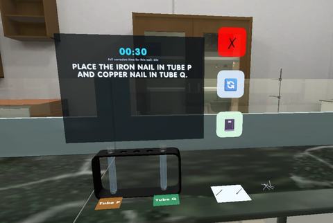

SciLab VR
SciLab VR is an immersive science-learning experience for Form 4 students, with guided experiments that let learners observe, measure and record results in a virtual environment.
Five playable levels
The five playable levels cover 13 Form 4 science experiments from five curriculum chapters. They include a field activity on how pulse changes by gender, age and activity, followed by four laboratory levels: comparing hollow and solid structures under load; tracking seedling growth over six days; investigating materials and latex coagulation; and observing how apple slices change over time.

My contribution
I designed and developed the gameplay, experiment interactions and recording mechanics for the four laboratory levels. Activities include collecting measurements with controllers, entering and submitting results, and viewing calculated summaries such as the seedling mean.
Movement and platform
The experience supports English and Malay. Players move continuously with the left joystick and snap turn with the right; there is no player-controlled teleportation. Some activity transitions reposition the player in front of a new interface as required by the experience.